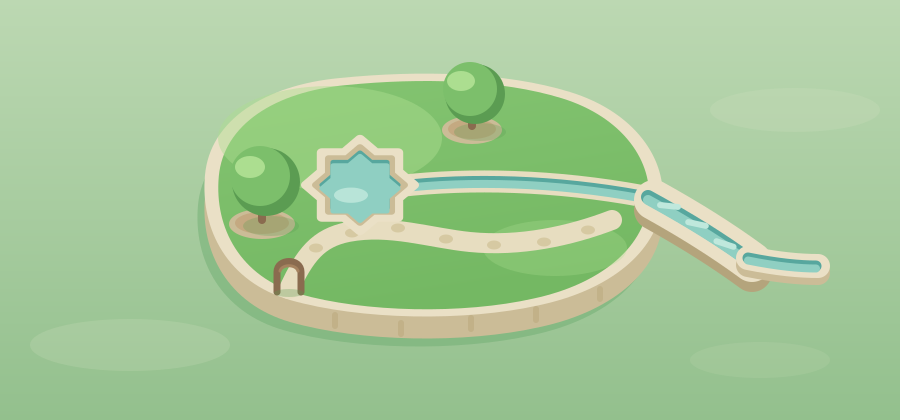

Verdicts (see LOG.md): soft beat crisp decisively; archipelago beat monolith and causeway; the embedded charbagh geometry survived its natural challenger. Champion: arch-soft · 2, with islands-as-regions adopted as the map's structure. Losing cells are parked outside the repo. Round 2 composes the full three-island journey in this vocabulary.
